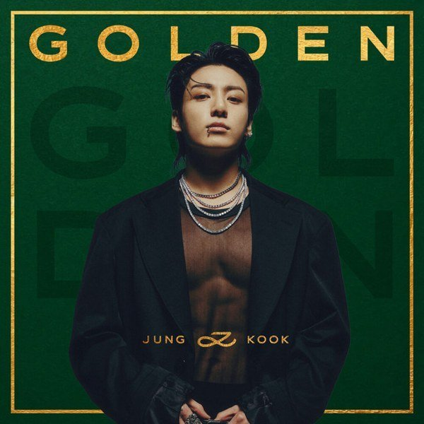
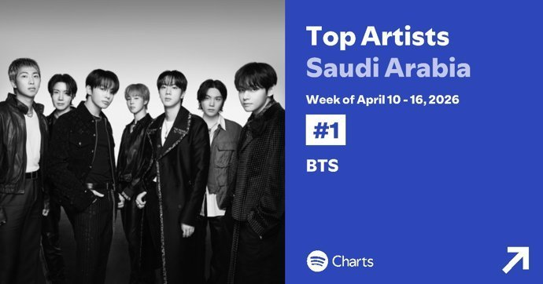
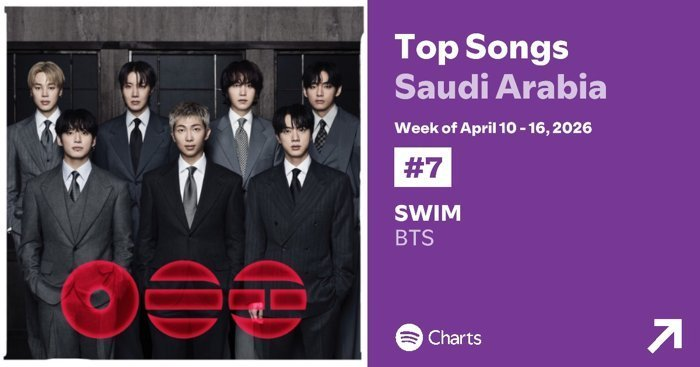

사우디아라비아의 음원 시장은 감성 팝(pop) 중심의 장기 소비 구조를 보인다. 2019년 6월 27일부터 2026년 4월 16일 기준, 스포티파이(Spotify) 사우디아라비아의 주간 차트를 기준으로 한 누적 스트리밍 집계에서 감성 팝 중심의 장기 흥행이 뚜렷하다. 약 7년에 걸친 누적 데이터는 단기간의 화제성보다 꾸준한 소비가 순위를 좌우하는 흐름을 보여준다.
▣ 스포티파이 사우디아라비아 누적 스트리밍 TOP 10
| 순위 | 아티스트 | 곡명 | 차트 체류 | 누적 스트리밍 |
|---|---|---|---|---|
| 1 | Another Love 톰 오델 (Tom Odell) | 242주 | 12,778,685 | |
| 2 | Sweater Weather 더 네이버후드 (The Neighbourhood) | 286주 | 12,451,786 | |
| 3 | BIRDS OF A FEATHER 빌리 아일리시 (Billie Eilish) | 100주 | 10,915,991 | |
| 4 | Apocalypse 시가렛 애프터 섹스 (Cigarettes After Sex) | 230주 | 10,907,672 | |
| 5 | WILDFLOWER 빌리 아일리시 (Billie Eilish) | 100주 | 10,652,292 | |
| 6 | Set Fire to the Rain 아델 (Adele) | 202주 | 10,157,074 | |
| 7 | Seven 정국 (Jung Kook) | 140주 | 9,904,619 | |
| 8 | I Wanna Be Yours 아틱 몽키스 (Arctic Monkeys) | 202주 | 9,529,010 | |
| 9 | lovely 빌리 아일리시 (Billie Eilish) | 316주 | 9,044,776 | |
| 10 | Die With A Smile 레이디 가가 (Lady Gaga) | 87주 | 8,841,764 |
※ 출처: Spotify. 'Saudi Arabia Weekly Top Songs Chart' (2019.06.27 ~ 2026.04.16 기준)
이번 집계에서 1위는 톰 오델(Tom Odell)의 <어나더 러브(Another Love)>로 약 1,277만 회의 스트리밍(streaming)을 기록했다. 이어서 더 네이버후드(The Neighbourhood)의 <스웨터 웨더(Sweater Weather)>, 빌리 아일리시(Billie Eilish)의 <버즈 오브 어 페더(BIRDS OF A FEATHER)>, 시가렛 애프터 섹스(Cigarettes After Sex)의 <아포칼립스(Apocalypse)> 등이 상위권을 형성했다. 전반적으로 잔잔한 분위기의 팝과 인디 계열 곡들이 오랜 기간 차트에 머물며 누적 스트리밍을 축적한 것이 특징이다.
이처럼 감성적이고 잔잔한 곡들이 장기간 소비되는 양상은 현지 청취 환경이 일상 속 배경음악 소비와 밀접하게 연결되어 있음을 보여준다. 이는 운전, 카페, 휴식 등 비교적 차분한 청취 상황에서 음악이 소비되는 비중이 높은 것으로 해석할 수 있다.
정국의 <세븐(Seven)>, 7년 누적 차트 7위의 의미
이러한 구조 속에서 케이팝의 성과는 제한적이지만 분명한 존재감을 드러냈다. 정국(Jung Kook)의 <세븐(Seven)>은 약 990만 회의 스트리밍을 기록하며 7위에 올랐다. 장기 체류 곡이 절대적으로 유리한 누적 구조에서 정국의 <세븐(Seven)>은 비교적 최근 발매 곡이 7년 누적 차트 중에서 톱 10에 진입한 사례로 주목된다.

▲ 정국의 '세븐(Seven)' 싱글 및 정규앨범 <GOLDEN> — 출처: 스포티파이(Spotify)
이는 케이팝이 음원이 발매되던 초기 강한 소비력을 기반으로 단기간에 높은 스트리밍을 형성하는 특징을 보여준다. 일반적으로 케이팝은 발매 초기에는 팬덤을 중심으로 한 대규모 스트리밍이 집중되며 빠르게 순위를 끌어올리는 '고밀도 단기 소비 구조'의 성격을 보인다. 반면 서구 팝은 재생목록(playlist)을 기반으로 한 반복 청취를 통해 장기간 스트리밍을 누적하는 '장기 체류형 소비 구조'가 특징이다. 다만 <세븐(Seven)>의 경우, 초기 집중 소비 이후에도 꾸준한 재생이 이어지며 장기 누적형 소비로 확장되는 흐름을 보이고 있다. 이는 케이팝이 기존의 단기 소비 패턴을 넘어 전 세계 음악 시장의 소비 구조와 점차 접점을 넓혀가고 있음을 시사한다.
정국의 <세븐(Seven)>의 흥행은 단순히 케이팝으로만 평가하기보다는 글로벌(global) 팝 시스템 안에서 제작되고 유통되면서 다른 팝 아티스트(artist)들과 함께 동일한 방식으로 소비된다는 점에서 이를 보다 확장된 맥락에서 이해할 필요가 있다. 즉 장르는 케이팝이지만 제작에서부터 소비에 이르는 전반적인 구조는 이미 글로벌 팝 시장에 존재하는 곡들과 크게 다르지 않다. 작곡·프로듀싱 단계부터 해외 인력이 함께 참여하고, 플랫폼(platform) 기반으로 전 세계에서 동시 소비가 이루어지는 구조이기 때문이다.
글로벌 팝 중심 시장에서의 케이팝 위치
톱 100으로 범위를 넓히면 케이팝의 양상은 보다 뚜렷해진다. 지민(Jimin)의 <라이크 크레이지(Like Crazy)>(35위)와 <후(Who)>(55위), 뷔(V)의 <러브 미 어게인(Love Me Again)>(49위), 로제(ROSÉ)의 <아파트(APT.)>(90위), 정국(Jung Kook)의 <3D>(96위) 등 총 6곡이 순위권에 포함됐다. 특히 이 가운데 대부분이 방탄소년단(BTS) 구성원들의 개인곡으로 나타나며, 특정 인물을 중심으로 소비가 집중되는 경향을 보였다.
가장 최근인 2026년 4월 10일~4월 16일 기준, 스포티파이 사우디아라비아 집계 기준으로 방탄소년단(BTS)이 탑 아티스트(Top Artist) 1위를 차지했고, 방탄소년단(BTS)의 <스윔(Swim)>이 탑 송(Top Songs)에서 7위를 차지하여 눈길을 끌었다.


▲ 스포티파이(Spotify) 사우디아라비아 주간 차트: 탑 아티스트 1위이자 탑 송 7위를 기록한 방탄소년단(BTS) — 출처: 스포티파이(Spotify) (2026.04.10~04.16 기준)
이와 같은 결과는 사우디아라비아 음원 시장에서 방탄소년단(BTS) 브랜드의 영향력이 여전히 유효함을 보여주며, 이는 사우디아라비아 시장에서 케이팝이 장르 자체로 확산되기보다는, 특정한 유명 아티스트를 중심으로 소비가 이루어지고 있음을 시사한다. 즉 사우디아라비아에서 케이팝은 유명 팬덤 기반의 선택적인 소비가 강하게 작동하고 있으며, 이는 현지에서 케이팝의 저변 확대가 아직 제한적인 것과 동시에 핵심 아티스트들의 영향력은 매우 견고한 이중적인 구조를 보인다.
결과적으로 사우디아라비아의 음악 시장은 일명 '장기 체류형 글로벌 팝'과 '단기 집중형 케이팝'이 공존하는 구조를 보인다. 전자는 감성적인 공감과 일상적인 소비를 기반으로 꾸준히 누적되는 반면, 후자는 팬덤 중심의 강한 초기 반응을 통해 존재감을 확보한다. 다만 <세븐(Seven)>과 같은 사례는 이러한 구분이 점차 완화되며, 케이팝이 추후 사우디아라비아에서 장기적인 소비 구조로 확장될 수 있는 가능성을 보여주는 대표적인 사례로 볼 수 있다.